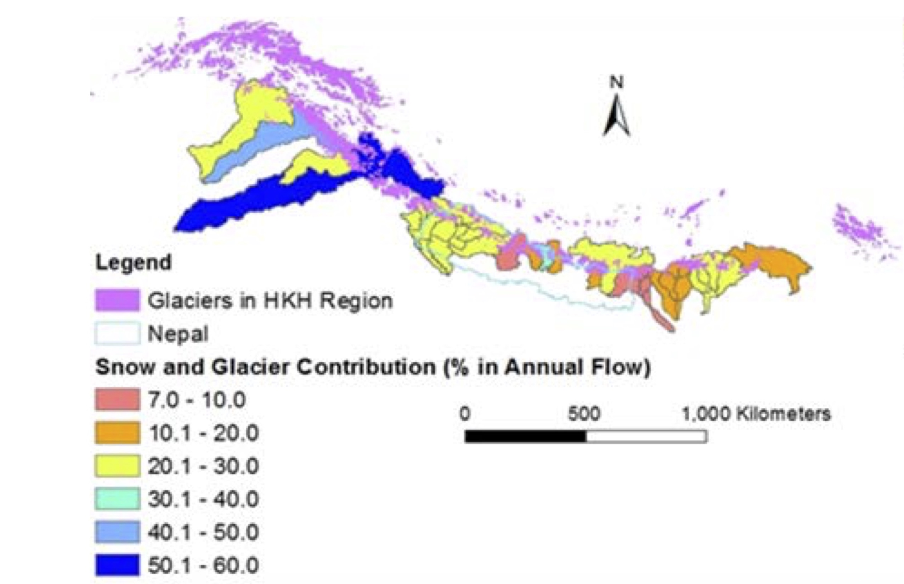
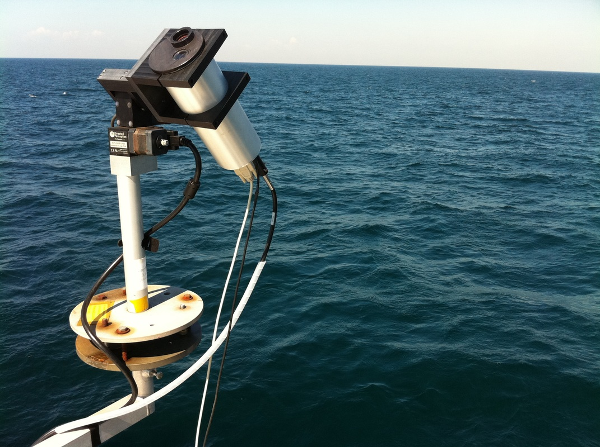

We are excited to announce that Crossroads members Kyle McDonald and Maria Tzortziou were awarded several NASA research grants in Fall 2016!
McDonald received three NASA awards, one of which will study landscape changes in the high mountains of Asia, while the other two will study properties of soil moisture in boreal and Arctic ecosystems.
In the first award, titled "Assessing Impacts of Climate-Induced Change on River Flow and Associated Economic Output in the High Mountain Asia Region", McDonald and Co-PIs from CCNY and the University of Chicago/Argonne will develop tools and analysis to inform water resource management decisions and ecosystem sustainability in the High Mountain Asia region (i.e., the Himalayas).
Himalayan rivers serve as the water sources for more than a billion people living downstream; thus, understanding changes in snow, glaciers, and precipitation will benefit the social and economic livelihood of this important region of the earth.
The team will specifically develop an integrated framework that couples process-based models with econometric models and remotely-sensed and field-based datasets on freeze/thaw transitions, snow cover and glacier area observations.
McDonald's other two NASA awards will study seasonal soil moisture dynamics in boreal and Arctic ecosystems using data from NASA's Soil Moisture Active Passive (SMAP) mission.
The first award, "Assessing and Downscaling SMAP data for Organic Soil Fuel Moisture Estimation in Boreal-Arctic Ecosystems" will use SMAP radiometer data to provide time series estimates of seasonal frost dynamics. The assembled research team, which includes Nicholas Steiner (Crossroads member from CCNY) and researchers from JPL/Caltech, the National Institute of Scientific Research (Canada), the Finnish Meteorological Institute, the University of Sherbrook (Canada), the Université de Montréal, and San Diego State University, will use a combination of in situ and remotely collected data to better understand moisture dynamics in these rapidly changing ecosystems.
The second award, "Assessing and Downscaling SMAP data for Organic Soil Fuel Moisture Estimation in Boreal-Arctic Ecosystems" will support field studies in Canada and on Alaska’s north slope to collect soils data in forests, peatlands and tundra. These studies will evaluate SMAP moisture products for fuel moisture monitoring in boreal and Arctic ecosystems for fire danger prediction, as well as to understand the spatial and temporal patterns of moisture relative to the high northern latitude landscape’s vulnerability to wildfire.
Crossroads member Maria Tzortziou also received a NASA award in Fall 2016, expanding on her past work from earlier awards from NASA and other funding sources. This project, titled "Satellite Ocean Color Observations from NASA's PACE and ACE Missions: Applications and Societal Benefits" will integrate advanced remote sensing observations and analytical techniques developed by Tzortziou and her lab to improve understanding of coastal and ocean systems.